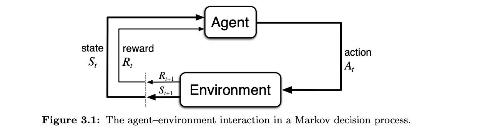

Chap3:Finite Markov Decision Processes
Outline:
0. BackGround
- What is FMDP:
- What is Markov process?
- why is it finite?
- What is a Decision Process?
- Some Notations of quantities in the FMDP:
- Prob distribution
- Reward
- State
- Returns and Episodes
BackGround of FMDP
现在每个人都处于一个巨大的世界（Environment），人们（Agent）需要面对社会以及各种各样的问题，需要做出各种决策（Action），然后接受世界的打压或者奖励（Feed Back），最终走向死亡（有点Depressing ）。
Now,你正在面对一个任务：
你需要连续和三个人轮流进行硬币游戏，你需要选择硬币的一面，当你选择的面与对方一样时你赢，你需要连赢三人，每输一人，就回到前一个人。（对方的硬币其实是提前设定好的，如果也纯随机，这个问题就变的有意思了）
这个问题中，你就像一个Agent，每一轮你需要做出选择（Action）。
当你赢了一轮的时候奖励+1，输了一轮就-1，最终的目标是达到奖励为+3。
整个游戏的状态是：你到了哪一个人面前，比如说你在第二个人面前，那么此时的状态就是2，或者说你在位置2，最终的状态是3.
将这个问题想象成，你与一个环境进行交互，你做出Action，环境给你一个奖励，你观察这个环境，得到当前的状态（你在哪一个人面前），不断循环，最终有一次你走运，连赢了三次，游戏结束。
根据这个游戏，我们可以定义一些常用的量：
- 时间步骤（time step）：时间点（游戏开始是t =0，你玩了n次就是t = n）
- 动作（Action）: 在时间点t你选择的动作 \(A_t\)（每一轮你选择正面还是反面）(一开始的动作是 \(A_0\))
- 奖励（Reward）\(R_t\)：在做完动作 \(A_{t-1}\) 之后，环境给你的奖励（赢了，奖励+1，输了，奖励-1）
- 状态（State）\(S_t\): 在选择动作 \(A_{t-1}\)之后，你观察环境的情况（你此时在哪一个人面前）
这个游戏的轨迹如下： $$ A_0 -> (R_1,S_1) -> A_1 ->(R_2,S_2) -> \dots --> (R_T,S_T) $$ 
游戏的一开始你选择了一个Action ，然后环境给你奖励以及它的状态，然后你根据这些反馈在做出你这一轮的action，最终你会到达一个最终的状态（Rt = 3，St = 3）
有了这些，我们来看看什么是一个有限马尔可夫决策过程?
What is the FMDP?
1. 什么是Markov 过程？
粗略地说，Markov过程是将来的状态只与现在的信息相关，与过去无关。
上面的例子是不是一个Markov过程?
按照这个定义，你将来处于位置2还是位置3，只和你现在哪里有关，比如说你现在在位置1，那么下一轮在位置2的概率是百分之50，你在位置3的概率是0，但是如果你现在在位置2，那么下一轮你在2的概率是百分之50，你在位置3的概率也是百分之50。
所以上面的游戏是一个Markov过程
2. Why is it finite?
我们说一个马尔可夫过程是有限地，表明这个游戏（整个环境）最终会抵达一个最终的状态。
马尔可夫过程的轨迹是： $$ S_0,A_0,R_1,S_1,A_1,R_2,S_2,A_2,R_3,\dots $$ 如果这个过程是有限的，那么这个轨迹就会在某一个时间t = T停止。
对应的就有一个无限马尔可夫过程，即这个轨迹无休止地进行下去，没有一个最终的状态。
可以举一个无限马尔可夫过程的例子：
现在工作室有一个机器人，它的任务是：在这个工作室内收集空的苏打罐子。
这个机器人上面有传感器来检测哪里有罐子，手臂来拾起罐子，最后将这个罐子放到身上的垃圾桶上。现在特殊的是，这个机器人的电池比较小（不支持它长时间工作，但是是可以更换的）。
现在考虑机器人有三种动作：1. 原地等待，2.搜索，3.充电，两种状态：低，高
当机器人电量高的时候，他会做出哪些动作---搜索，等待
当它电量低时----> 搜索，等待，充电三种
假设当机器人电量高时，搜索罐子有概率 \(\alpha\) 回到电量高的状态（罐子离robot比较近），那么有 \(1-\alpha\)的概率跌到电量低的状态；当电量低时，搜索罐子有概率 \(\beta\)维持当前的电量状态，有概率 \(1-\beta\) 电量耗尽，需要人来给他更换电池（奖励-3）
那么对于给robot的奖励而言，当robot完成搜索，并且电池没有耗尽，此时奖励为 \(r_{search}\)；当robot 原地等待时，获得 \(r_{wait}\)；当电量低主动recharge时，奖励为0；还有一种惩罚，当它需要人为更换电池时奖励为-3。
这就是一个典型的无限Markov Process，它的转换图如下：
其中有两种节点，一种是状态节点，一种是动作节点，线上的是对应的概率以及奖励。

3. What is a Decision Process?
决策过程是每一轮Agent都需要选择一个Action
那么有一个问题是：是不是所有的任务都可以看成一个决策过程呢？（I don't know currently)